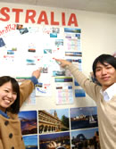

';
$header_obj->fncMenuHead_h1text = '日本ワーキング・ホリデー協会大阪オフィスへのアクセス';
$header_obj->display_header();
include('../../calendar_module/mod_event_horizontal.php');
?>
';
$header_obj->fncMenuHead_h1text = '日本ワーキング・ホリデー協会大阪オフィスへのアクセス';
$header_obj->display_header();
include('../../calendar_module/mod_event_horizontal.php');
?>
大阪オフィスのご案内

大阪オフィス
| 住所 | 大阪セミナー会場：大阪オフィスにて開催されます。 〒530-0001 大阪市北区梅田1-11-4-500 大阪駅前第4ビル5階 19-1号室 |
|---|---|
| セミナー会場地図 |
mobilepage) { ?>
大きな地図で見る |
| 最寄り駅 |
日本ワーキングホリデー協会大阪オフィスが入居している大阪駅前第4ビルは、JR大阪駅、梅田駅から地下街を通りたどり着くことができます。
雨の日でも傘いらずです！ ○ JR大阪駅より徒歩5分（地上） ⇒ 詳細はこちらから ○ JR大阪駅より徒歩5分（地下） ⇒ 詳細からはこちらから 大阪丸ビル・大阪ヒルトン方面へ南方面へ歩くと大阪駅前第４ビルが見えます。 ○ 地下鉄御堂筋線梅田駅より徒歩5分 ⇒ 詳細はこちらから ○ 地下鉄四ツ橋線西梅田駅より徒歩5分 ⇒ 詳細はこちらから ○ 地下鉄谷町線東梅田駅より徒歩5分 ⇒ 詳細はこちらから 御堂筋線梅田駅、四ツ橋線西梅田駅、谷町線東梅田駅、 大阪丸ビル・ヒルトン大阪方面へ ○ JR東西線 北新地駅より大阪駅前ビルへ連結 ⇒ 詳細はこちらから ○ 阪急電車梅田駅より 大阪丸ビル・ヒルトン大阪方面へ徒歩８分 ⇒ 詳細はこちらから ○ 長距離バス ハービス大阪駅より ヒルトン大阪方面へ徒歩5分 【初めて大阪へお越しのお客様へ】 大阪の地下街は大変広く複雑で、大阪にお住まいの方でも道に迷うことが多いです。 はじめてお越しのお客様は、大阪駅/梅田駅から地上に出てで歩かれたほうがわかりやすいと思います↓ 大阪駅から「ヒルトンホテル大阪」方向へ向かい→「大阪第４ビル」まで歩いて数分です。 mobilepage) { ?> 大きな地図で見る 大きな地図で見る 【大阪の周辺情報】 大阪オフィスのビルは地下で大阪駅と連結してることから、コンビニやドラッグストア、飲食店が立ち並んでいます。 安くてうまい居酒屋から、外人さん達が通う和食料理まで、すべて地下街を通り抜けていくことができます。 大阪セミナーの後に友達と待ち合わせるには絶好の場所です。 |
| 連絡先 | お問い合わせ 無料セミナーのご予約はこちらから |
| 営業時間 | OPEN 11:00 - CLOSE 19:00 大阪オフィスは、土日、祝日も営業しております。 ※ご注意 個別でのカウンセリングをご希望の場合は、事前にご予約をお願い致します。 |
| スケジュール |
大学生/専門学校の生徒様の利用者が多い大阪オフィスは、地元大阪を含め、三重県,滋賀県,京都,神戸,奈良県,和歌山県などからセミナーへ参加していただいております。 特に京都から最新情報を求めて大阪にご来店されるお客様が多く、大阪でのショッピングの合間にワーキングホリデーセミナーに参加して頂いております。 週末を利用したカウンセリングやワーキングホリデーセミナーも人気です！大阪での楽しい1日を過ごす予定があれば、大阪オフィスにも是非お立ち寄りください。 |
| カウンセラー紹介 |
|
| オフィスの様子 |   |
| 大阪オフィスの雰囲気 |
6月21日よりオフィスを第４ビルへと移転し、より多くのお客様をお迎えできるようになりました。 店内には膨大な情報量と海外留学経験がギュと詰まっており、大型スクリーンで東京オフィスと連携しさまざまなセミナーを大阪店内で体験していただくことが可能です。 はじめてご来店頂いたお客様でも、お帰りの際にはフレンドリーに話し合えることが多く、 大阪オフィスはお客様とともに存在することを実感できます。 大阪オフィス主催のイベントには日本に帰国されたワーホリ経験者の方々にたくさん参加していただいており、 情報交換の場にもなっています。 一人でセミナーに参加されてもいつの間にか仲間ができている大阪オフィスへ是非一度お越しください！  |
| 大阪オフィスから |
【インターン生のよーこさん】 はじめまして、大阪オフィスでインターンをしているよーこです！ 大阪オフィスには大阪のリズムが合って関西以外の県から来られた方は、はじめびっくりするかもしれません。 でも大丈夫です、すぐに溶け込めます♪ 大阪オフィスの丁寧で決断力のあるスタッフの皆様は しっかりと話を聞いてくれて、無理をしない留学を進めてくれます。そばで一緒にヒヤリングをしていてホッと安心します。 女性スタッフも多いので、女性でも気を使わずに何でも聞くことができますよ。 |